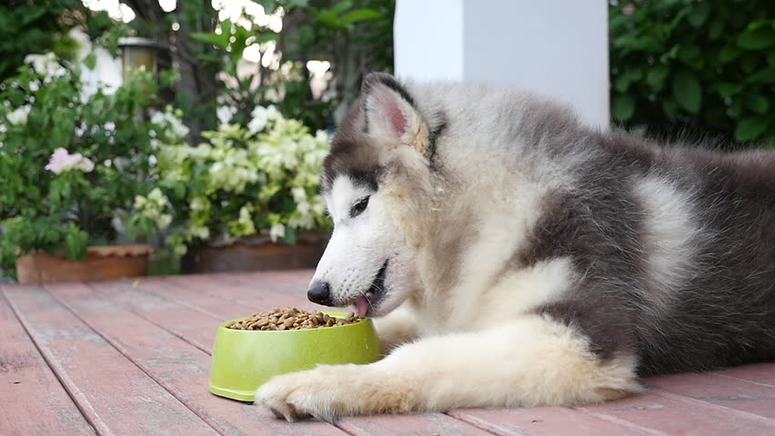
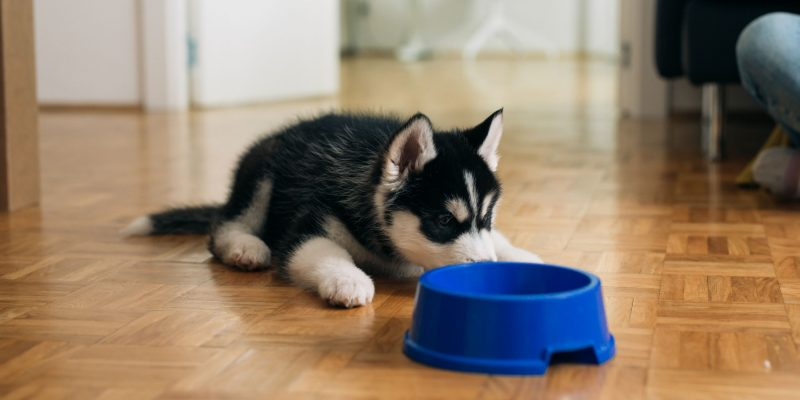

سگ هاسکی یکی از زیباترین سگهای دنیاست و با ظاهر شبیه به گرگ و شیطنت و بازیگوشیاش خیلیها رو عاشق خودش کرده. غذای سگ هاسکی مهمترین عامل در حفظ سلامتی و طول عمر هاسکیه و لازمه که بهش توجه زیادی بکنید. نژاد هاسکی سگ بسیار پرانرژی و فعالیه و به انرژی و پروتئین بالایی نیاز داره.
در این مطلب پت پرس در مورد انتخاب بهترین رژیم غذایی برای سگ هاسکی و توله آن، بهترین تشویقیها، سوالات رایج شما و نکات تغذیهای که در سنین مختلف باید بهش توجه کنید صحبت میکنیم. خیالت راحت ما این راهو بلدیم!

غذای سگ هاسکی چیست؟
سگ هاسکی جزو سگهای کاری حساب میشن و از قدیم برای کشیدن سورتمه در مناطق قطبی و سردسیر استفاده میشدن و به همین دلیل غذای سگ هاسکی باید سرشار از پروتئین و چربی باشه تا اونا بتونن ساعتها سورتمه بکشن و در سرما بدون.
نکته جالب در مورد غذای سگ هاسکی اینه که این سگها با مقدار کمی غذا میتونن ساعتها دووم بیارن و اصولا زیاد شکمو و پرخور نیستن.
به صورت کلی میشه گفت که برنامه و رژیم غذای مخصوص سگ هاسکی باید شامل پروتئین، کربوهیدرات، چربیهای مفید، ویتامینها و مواد معدنی برای رشد و تقویت سیستم ایمنی بدن سگ باشه.
پروتئین
پروتئین به رشد و تقویت عضلات و تامین انرژی مورد نیاز سگ کمک میکنه. توله سگ هاسکی به ویژه برای اینکه رشد خوبی داشته باشه به پروتئین زیادی نیاز داره. هاسکی ها بسیار پرانرژی و فعالن و متابولیسم بالایی هم دارن. پروتئین گوشت بخش اصلی خوراک سگ هاسکی سیبرین رو تشکیل میده؛ اما فراموش نکنید که نژاد هاسکی به مواد غذایی دیگه هم نیاز داره.
کربوهیدرات
سبزیجات و موادی مثل نخود، هویج، ذرت، سیب زمینی، برنج، پاستا و غلات منابع کربوهیدرات خوبی برای سگ هاسکی هستن.
چربی
چربی برای رشد و سلامت هاسکی ضروریه و به تقویت و سلامت پوست و مو، سیستم عصبی و تامین انرژی کمک میکنه. البته میزان چربی باید بالانس شده و متعادل باشه وگرنه چربیِ اضافی باعث چاقی در سگ میشه. منابع چربی مفید برای هاسکی مثل روغن ماهی، روغن گیاهی، چربی طیور و … هستن.
اطلاعات کامل انواع غذای سگ براساس نژاد، سن، شرایط جسمانی و… رو ما به طور کامل تو این مطلب آوردیم: غذای سگ.

آیا میشه غذای خانگی برای سگ هاسکی درست کنیم؟
گرون شدن قیمت ارز، ممنوعیت ورود غذای سگ خارجی و نایاب شدن محصولات باکیفیت خیلی از صاحبای سگ رو به این فکر انداخته که برای سگشون غذای خونگی درست کنن.
در مورد غذای خونگی باید بدونید که این غذا تنها در صورتی میتونه برای سگ هاسکی مفید و کامل باشه که ترکیبات و مقدارشون کاملا متناسب با نیازهای تغذیهای سگ باشه و ترکیباتش بالانس شده باشه. در غیر این صورت، غذایی که به سگتون میدین نه تنها براش کافی نیست؛ بلکه در دراز مدت ممکنه اثرات بدی روی سلامت عمومی سگ بذاره.
در مورد این که چرا باید غذای خانگی برای سگ رو انتخاب کنین به طور مفصل تو این مطلب صحبت کردیم: غذای خانگی برای سگ در ضمن چند دستور پخت عالی غذای خونگی هم براتون گذاشتیم.
فقط کافیه مشخصات سگت مثل نژاد، سن، وزن، میزان فعالیت و …. رو به ما بدی و بعد برنامه غذایی که مخصوص سگتون نوشته شده رو دریافت کنید. اگه دقیقا براساس این برنامه آشپزی کنید میتونید مطمئن باشین که دارین بهترین و کاملترین غذا رو به سگ هاسکی عزیزتون میدین.
دوست داری از تیم تغذیه پت پرس برای سگ قشنگت برنامه غذایی خونگی بگیری؟
سفارش آسان از طریق اپلیکیشن یا پر کردن فرم در صفحه برنامه غذایی

مقدار غذای سگ هاسکی چقدر باید باشه؟
اینکه هاسکی شما در طول روز به چه میزان غذا نیاز داره به سن، وزن و میزان فعالیتش بستگی داره و بهتره با مشورت دامپزشک مقدار غذای سگ هاسکی خودتون رو تعیین کنید.
اما به طور کلی مقدار غذای هاسکی مالاموت و سیبرین و هیمالین و آلاسکایی و … در طول روز باید ۲ تا ۳% از کل وزن بدنشون (بسته به میزان فعالیت) باشه.
| وزن | ۵kg | ۱۰kg | ۱۵kg | ۲۰kg | ۲۵kg | ۳۰kg | ۳۵kg | ۴۰kg | ۴۵kg |
| ۲% | ۱۰۰g | ۲۰۰g | ۳۰۰g | ۴۰۰g | ۵۰۰g | ۶۰۰g | ۷۰۰g | ۸۰۰g | ۹۰۰g |
| ۳% | ۱۵۰g | ۱۵۰g | ۳۰۰g | ۴۵۰g | ۶۰۰g | ۷۵۰g | ۹۰۰g | ۱۰۵۰g | ۱۳۵۰g |
این جدول برای همه هاسکیها از تولگی تا بلوغ و سنین میانسالی صادقه و براساس وزن سگتون میتونید مقدار غذای سگ هاسکی رو مشخص کنید.
غذای توله سگ هاسکی رو در ۳-۴ وعده و غذای سگ هاسکی یک ساله به بالا رو در یک یا دو وعده بهش بدید.
در فواصل وعده غذاهای سگ هاسکی و به ویژه در هنگام تربیتش میتونید از تشویقیهای خوشمزه استفاده کنید. البته کمی پایینتر بهترین تشویقی سگ هاسکی رو هم مختصر و مفید معرفی کردیم.

غذای توله سگ هاسکی از بدو تولد تا یک سالگی
تغذیه و رژیم غذایی هاسکی در هر بازه سنی متفاوته و با توجه به سن تولهها باید نوع غذا و میزانش رو تغییر بدید تا تمام نیازهای تولههای هاسکی تامین بشه. تغذیه صحیح توله هاسکی خیلی مهمه و توی سلامت و رشد اونا مستقیما تاثیرگذاره.
در ادامه مطلب بهتون میگیم که چطور باید توله هاسکی رو تغذیه کنین، اما در کنارش پیشنهاد میدیم برای آشنایی بیشتر با اصول تغذیه توله سگها مقاله غذای توله سگ بخونین. توی اون مطلب دامپزشکای تغذیه پت پرس گفتن که تو هر سن به تولهها چه غذایی بدین.
غذای سگ هاسکی یک ماهه تا ۲ ماه
تولهها تا ۲ ماهگی یا هشت هفتگی باید پیش مادرشون باشن و شیر مادر بهترین منبع تغذیهای برای اوناست. پس لطفا از خرید تولههای زیر ۲ ماه خودداری کنید.
اگه بنا به هردلیلی مجبورید از توله سگ هاسکی بی مادر نگهداری کنید باید حتما بهش شیرخشک مخصوص توله سگ بدید. به غذای سگ هاسکی یک ماهه به بعد میتونید غذای خشک مخصوص استارتر همراه با کمی آب هم اضافه کنید.
نگهداری و پرورش توله سگ تازه به دنیا آمده شرایط خاص خودش رو داره که ما تو مطلب نگهداری از توله سگ سعی کردیم راهنماییهای لازم و تمام چیزهایی که باید در این باره بدونین رو آوردیم.
غذای خشک سگ مادر و توله مدل رویال کنین + غذای سگ هاسکی حامله و شیرده
محصول: فرانسه
ترکیبات: مرغ، برنج، چربی مرغ، گندم، درت، چغندر، روغن ماهی، روغن سبزیجات، کربنات کلسیم
چرا این محصول را دوست داریم؟
سگ هاسکی باردار یا شیرده به رژیم غذایی خاصی نیاز داره و در این دوران به انرژی و پروتئین و کلسیم بیشتری نیاز داره. به همین دلیل بهتره در دوران بارداری و شیردهی از غذای مخصوص توله سگ استفاده کنید.
این محصول مخصوص غذای سگ هاسکی حامله و شیرده نژاد بزرگ و همینطور تغذیه توله هاسکی ها تا سن ۸ هفتگی تهیه شده و برای غذای سگ هاسکی حامله و شیرده و تولههاش پیشنهاد میکنیم از این محصول استفاده کنید. برای اطلاعات بیشتر در مورد این که چه چیزهایی باید تو غذای سگ باردار باشه و نباشه، مراجعه کنید به مقاله غذای سگ باردار.
برای مشاهده قیمت و خرید غذای سگ هاسکی روی لینک زیر کلیک کنید.
غذای توله هاسکی دو ماهه تا شش ماه
در این مرحله حتما باید غذای خشک مخصوص توله سگ تهیه کنید و از دادن غذای سگ بزرگسال خودداری کنید.
توله هاسکی به ۳ تا ۴ بار غذا در روز نیاز داره و در مجموع باید بهش ۲ تا ۲.۵ فنجان غذای خشک یا تر بهش بدید. به مرور تعداد وعدهها رو کم کنید تا در ۴ ماهگی به ۳ بار در روز برسه.
ظرف غذا رو جلوش بذارید و بعد از ۲۰ دقیقه بردارید تا توله یاد بگیره که سر یک زمان مشخص میتونه غذا بخوره.
تا ۶ ماهگی همچنان ۳ بار در روز به هاسکیتون غذا بدید. تولهها به پروتئین بالا و بالانس صحیحی از ویتامینها و مواد معدنی نیاز دارن که برای سلامت دندانها و استخوانهاشون ضروریه. به همین دلیل حتما بهش غذای مخصوص توله سگ بهش بدید.
غذای مخصوص توله سگ باید حداقل ۲۲% پروتئین و ۸% چربی داشته باشه.

تغذیه توله هاسکی ۶ ماه تا یک سال
از ۶ ماهگی به بعد تعداد دفعات خوراک سگ هاسکی رو به ۲ بار در روز کاهش بدید. وقتی تولهتون به یک سالگی نزدیک شد با مشورت دامپزشک کم کم غذاشو به غذای هاسکی بزرگسال تغییر بدید.
بعضی سگها در ده ماهگی و بعضی دیگه در یک سالگی نیاز به غذای سگ بزرگسال دارن.
غذای توله سگ نژاد بزرگ رویال کنین
ترکیبات: پروتئین طیور، برنج، آرد ذرت، چربی حیوانی، پروتئین گیاهی، گندم، روغن ماهی، مواد معدنی و ویتامین
آنالیز محصول
| پروتئین | فیبر | چربی |
|---|---|---|
| ۳۰% | ۲.۶% | ۱۶% |
چرا این محصول را دوست داریم؟
- این غذا مخصوص تولههای نژاد بزرگ مثل هاسکی ۲-۱۵ ماه تهیه شده و کاملا مطابق با نیازهای تغذیهای این سگهای پرانرژیه.
- فرمولاسیون این غذا انرژی مورد نیاز توله هاسکیهای در حال رشد رو به خوبی تامین میکنه.
- پروتئین باکیفیت و مواد مغذی موجود در این غذا به سلامت گوارش و کیفیت مدفوع سگ کمک میکنه.
- برای اطلاع از قیمت غذای سگ هاسکی و خرید غذای سگ هاسکی روی لینک زیر کلیک کنید.
چرا این محصول را دوست داریم؟ برای خرید و مشاهده قیمت غذای خشک سگ هاسکی جوسرا روی لینک زیر کلیک کنید. غذای خانگی (در صورتی که توسط دامپزشک بالانس و فرمول نویسی بشه) و برندهای معتبر غذاهای تجاری که به صورت غذای خشک و غذای کنسروی موجوده بهترین و مطمئنترین رژیم های غذایی برای سگ هاسکی هستن. چون این غذاها از نظر مواد مغذی لازم برای هاسکی بالانس خوبی دارن و خیالتون راحته که تمام مواد لازم به بدن سگتون میرسه؛ بنابراین پت پرس پیشنهاد میکنه که از برنامه غذایی خانگی تجویز شده توسط دامپزشک یا غذاهای تجاری برندهای معتبر برای تغذیه سگ هاسکیتون استفاده کنید. غذاهای تجاری برای سگ هاسکی به دو دسته زیر تقسیم میشن: ۱.غذای کنسروی برای هاسکی: کنسرو سگ شامل پروتئین گوشت زیادیه، حاوی درصد بالایی آبه و بسیار خوش خوراک و لذیذه؛ اما بسیار گرانتره و در دراز مدت باعث ایجاد جرم دندان و بوی بد دهان و مدفوع سگ میشه و نباید بخش زیادی از رژیم سگ رو تشکیل بده. ۲. غذای خشک سگ هاسکی: غذای خشک سگ مزایای زیادی داره و اکثر صاحبان سگ از این نوع غذا استفاده میکنن. غذای خشک از نظر اقتصادی به صرفهتره، نگهداریش راحتتره و جویدنش به سلامت دندانها و دهان هاسکی کمک میکنه. توجه کنید که حتما غذای خشک باکیفیت از برندهای معتبر بخرید؛ حتی برخی برندها غذای خشک مخصوص نژادهای بزرگ و فعال دارن که دقیقا مطابق با نیازهای تغذیهای این سگ ها تولید شده. حتما آب تازه همیشه در دسترس سگ قرار بدید. بنا به توصیه دامپزشکان: غذای خانگی در صورتی میتونه برای سگ هاسکی استفاده بشه که دستور اون غذا با توجه به ویژگی های سگ شما (وزن، میزان فعالیت، سن، عقیم بودن یا نبودن و ….) توسط دامپزشک نوشته شده باشه. ترکیبات: پروتئین طیور، ذرت، چربیهای حیوانی، گندم، برنج، مواد معدنی، روغن ماهی و ویتامینها آنالیز ترکیبات محصول
چرا این محصول را دوست داریم؟ محصول: آلمان ترکیبات: پروتئین مرغ، ذرت، برنج، چربی مرغ، فیبر چغندر، سالمون خشک شده، سیب زمینی، جگر مرغ جدول ارزش غذایی
چرا این محصول را دوست داریم؟ ترکیبات: ذرت، پروتئین طیور، برنج، چربی طیور، ماهی سالمون، پروتئین بره، روغن آفتابگردان، ویتامین و مواد معدنی آنالیز ترکیبات محصول
چرا این محصول را دوست داریم؟ متاسفانه غذای سگ هپی داگ دیگه به کشورمون وارد نمیشه ولی میتونید به عنوان غذای جایگزین از برند رفلکس استفاده کنید محصول: ایتالیا ترکیبات: گوشت بوقلمون و مرغ، غلات، مواد معدنی آنالیز ترکیبات محصول
چرا این محصول را دوست داریم؟ متاسفانه کنسرو سیمبا دیگه به کشورمون وارد نمیشه ولی میتونید به عنوان غذای جایگزین از کنسرو شایر استفاده کنید محصول: آلمان ترکیبات: گوشت شکار، کدو تنبل قطعاً برای شما به عنوان یه صاحب سگ هاسکی این سوالات پیش میاد که دیگه چه چیزهایی رو میتونه بخوره. ما در ادامه به تعدادی از پرتکرارترین سوالات درباره خوراک سگ هاسکی جواب دادیم. خیلی از مواد غذایی که تو خونه همهمون پیدا میشن برای سگ هاسکی مضر و خطرناکن و میتونن حتی جونش رو به خطر بندازن. برخی از این غذاهای ممنوعه برای سگ عبارتند از: اگه دنبال غذای خانگی برای سگ هاسکی هستین باید بگیم که خب گوشتهای مرغ، بوقلمون، گاو، ماهی سالمون و قزلآلای (بدون استخوان) جزو خوشمزهترین غذای سگ هاسکی مالاموت هستن. تو دسته سبزیجات و میوه هم سگ و توله سگ هاسکی قارچ، ذرت، بروکلی، بلوبری، موز، پرتقال، سیب و انبه رو خیلی دوست داره. در مورد غذای خشک سگ هاسکی هم که بهترینهاش رو براتون معرفی کردیم تا بتونین راحت انتخاب کنید. در فواصل وعده غذاهای سگ هاسکی و به ویژه در هنگام تربیتش میتونید از تشویقیهای خوشمزه استفاده کنید. مطلب تشویقی سگ در این مورد اطلاعات خوبی بهتون میده. چندتا مثال برای تشویقیهای مورد علاقه سگ هاسکی براتون آوردیم: فقط حواستون باشه پوست و هستهاش رو نخوره. اگه میخواین بدونین که چرا هندونه برای سگ مفیده و روزانه چقدر میشه بهش هندوانه داد این مطلب بخونین: هندوانه برای سگ. بله. تخم مرغ منبع فوقالعادهای برای پروتئینه. فقط اون رو باید به صورت آبپز بدون هیچ چاشنیای بهش بدین. در ضمن میتونین پوست اون رو هم آسیاب کنین و مثل پودر داخل غذای توله هاسکی خودتون بریزین. پوست تخم مرغ به منبع عالی برای تامین کلسیم به خصوص در غذای توله هاسکی به حساب میاد. بله هاسکی هم مثل تموم سگهای دیگه میتونه از انواع سیب تغذیه کنه. یادتون نره که هستهها و شاخه سیب رو حتماً جدا کنین. برای تعداد سیبی که میتونین بهش بدین هم حتماً از برنامه تغذیه ویژه سگتون استفاده کنین. دامپزشکان پت پرس براساس ویژگیهای سگ شما این برنامه رو تهیه میکنن. به طور کلی میشه گفت بادام یا بادام زمینی برای سگ غذای ممنوعه حساب نمیشه و میتونه بخوره اما بهتره که زیاد نخوره چون هضمش یکم براش سخته. اصلاً. این میوه برای سگ تقریباً سمی به حساب میاد و بهتره که اون رو از غذای هاسکی دور نگه دارین. اما اگه سگ هاسکی یا توله هاسکی شما یکم آواکادو خورده، نگران نباشین. دقت کنین که از پوست یا دونه آواکادو نخورده باشه که بخش سمیتر این میوه هستن. در صورت مشاهده استفراغ یا اسهال با دامپزشکان آنلاین پت پرس در ارتباط باشین تا هر چه زودتر مشکل حل بشه. ترجیحاً از شیر گاوی یا پاستوریزه دوری کنین. ولی میتونین از شیر بادام بدون افزودنی تو تغذیه سگ هاسکی بهره ببرین. حواستون به میزان کالری این شیر هم باشه و خوبه که تو استفاده ازش زیادهروی نکنین.. بله ولی به میزان مناسب. موز رو هم به صورت معمولی و هم به صورت تکههای یخزده به ویژه در تابستون میتونین بهش بدین. نان ساده یا سبوسدار گزینه خوبیه. ولی چون در هر حال نان کربوهیدرات داره بهتره که خیلی کم از اون تو غذا سگ هاسکی استفاده کنین. اگه هم اهل پخت خونگی نان هستین، حتماً خمیر نون رو از دسترس سگ هاسکی دور نگه دارین! در مورد دادن نان به سگتون بهتره مطلب نان برای سگ رو بخونین. بیکنها به خاطر چربی و نمکی که دارن گزینه خوبی نیستن اما اگه یه تیکه کوچیک همراه شما خورد، موردی نداره. در عوض شما میتونین موقع خرید غذای سگ هاسکی طعم بیکن رو انتخاب کنین تا بیشتر از غذای مخصوص خودش لذت ببره. بله قطعاً. فقط این گوشت باید بدون چربی باشه و اون رو بدون اضافه کردن چاشنی بپزین. بله ولی توصیه میکنیم که این کار رو نکنین. لاکتوز موجود تو پنیر معدهاش رو اذیت میکنه. برنج قهوهای برای تمام حیوانات خانگی قابل خوردنه. البته هاسکیها برنج سفید هم میتونن بخورن ولی خب پروتئین برنج قهوهای نسبت به برنج سفید بیشتر و چربیاش هم کمتره. اگه میخواین به سگتون برنج بدین، باید در مورد مزایا و معایب برنج برای سگ اطلاعات کافی داشته باشین.  سگ هاسکی به خاطر تخلیه انرژیای که در طول روز داره و شرایط خاص اقلیمی که اجدادش به اونجا تعلق داشتن، نیاز به تغذیه مناسب داره. شما میتونین برای تهیه غذای سگ هاسکی خودتون از غذاهای خانگی یا خشک استفاده کنین. مهمترین نکته در انتخاب بهترین غذا برای سگ هاسکی اینه که تعادل رژیم غذاییاش رعایت بشه و دچار اضافه وزن نشه. علاوه بر اون شما باید بدونین که توله هاسکی چه چیزهایی باید بخوره و چه چیزهایی براش مضره. در کنار تمام مسائل، حواستون باشه که اولویت با تهیه یا خرید ایدهآلترین غذای هاسکی باشه چون سلامت آینده سگ هاسکی شما به برنامه غذاییاش برمیگرده. دامپزشکان پت پرس با بررسی ویژگیهای سگ شما و تهیه برنامه خاص غذای هاسکی شما، میتونن تو این مسیر بهترین کمک رو بهتون بکنن.
غذای سگ هاسکی یک ساله و بالغ

غذای خشک سگ هاسکی و سگهای نژاد بزرگ رویال کنین
پروتئین فیبر چربی
۲۶% ۱.۲% ۱۷%

غذای خشک سگ جوسرا مدل Adult Festival
پروتئین چربی فیبرخام کلسیوم
۲۶% ۱۶% ۳% ۱.۴
غذای خشک سگ نژاد بزرگ هپی داگ
پروتئین چربی فیبر کلسیوم
۲۳% ۱۲% ۳% ۱.۳%
کنسرو سگ سیمبا
رطوبت پروتئن چربی فیبر
۸۰% ۸% ۶% ۱.۲۱%

کنسرو سگ یو اس پت با طعم گوشت شکار
سوالات متداول درباره تغذیه سگ هاسکی
خوراکیهای خطرناک و مضر برای سگ هاسکی
غذای مورد علاقه سگ هاسکی سیبرین چیه؟
بهترین تشویقی سگ هاسکی کدومه؟
آیا سگ هاسکی میتونه تخم مرغ بخوره؟
میتونم به سگ هاسکی سیب بدم؟
سگ هاسکی میتونه بادام بخوره؟
میتونم از میوه آووکادو تو برنامه غذایی هاسکی استفاده کنم؟
شیر برای هاسکی مضره؟
هاسکی میتونه موز بخوره؟

میتونم به سگ هاسکی نان بدم؟
به سگ هاسکی بیکن بدم؟
آیا هاسکی میتونه گوشت گاو بخوره؟
به سگ هاسکی پنیر بدیم؟
هاسکی میتونه برنج بخوره؟
از بین غذاهای سگ هاسکی کدوم رو انتخاب کنم؟


سلام میتونم به سگم اسکلت مرغ بدم؟ودر کنار میوه و سبزیجات و غذای خشک
بنظرتون مناسبه؟
سلام ابوالفضل عزیز،
بهتره که استخون ندین بهش. میوه، سبزیجات، غذای خشک و غذای خونگی براش کفایت میکنه. میتونین قسمتیش رو از لینک اول دنبال کنین و اگه خواستین همکارمون تو ریختن برنامه غذایی خونگیش کمکتون کنه:
طرز تهیه غذای خانگی برای سگ ها و نکات مهم تغذیهای
دریافت برنامه و دستور غذای خانگی سگ از دامپزشک (با توجه به ویژگی های سگ)